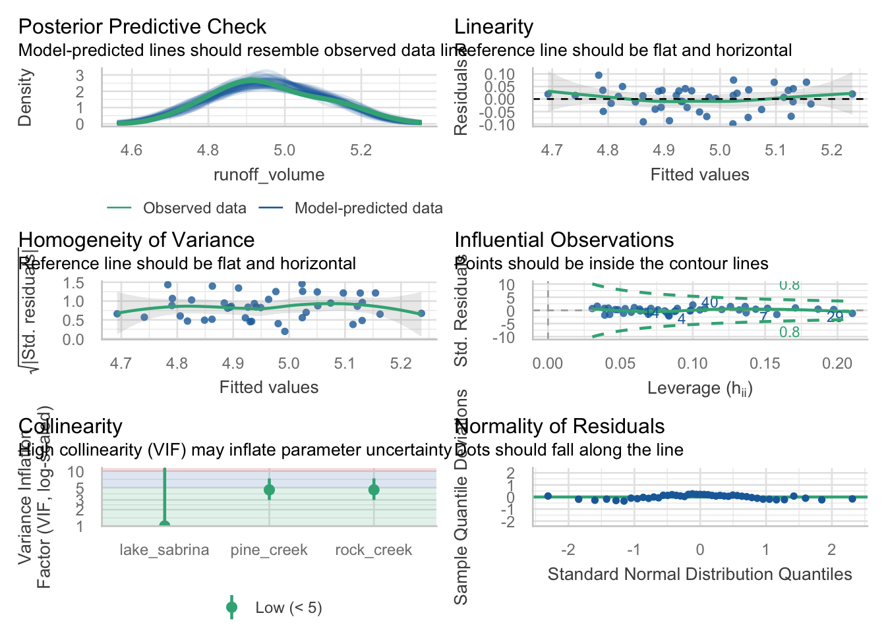

Welcome to week 8!
This week’s lab will give you some practice improving models by selecting the most useful predictors.
This will prepare you for next week’s content where we will use models for prediction.
Learning outcomes
This module links to the following unit learning outcomes:
LO3. demonstrate proficiency in the use or the statistical programming language R to apply an ANOVA and fit regression models to experimental data
LO5. interpret the output and understand conceptually how its derived of a regression, ANOVA and multivariate analysis that have been calculated by R
LO6. write statistical and modelling results as part of a scientific report
In this lab, we will learn how to:
1. Fit and interpret simple linear regression (SLR) models 2. Fit and interpret multiple linear regression (MLR) models 3. Assess model assumptions and apply transformations when needed 4. Evaluate and compare model fit statistics
Specific goals
By the end of this lab, you should be able to:
FIX EVERYTHING UP above
Preparation
Please work on these exercises by creating your own Quarto file. You are welcome to write your responses up in the style of a report.
Packages
This lab uses tidyverse, readxl, moments, psych, and performance. Install any you are missing by running the following in the console:
If a package is already installed, R will simply reinstall it — no harm done.
1. Variable selection for California_streamflow (~20 mins)
#
You are a hydrologist tasked with analysing legacy data to investigate the relationship between precipitation at three sites (Lake Sabrina, Pine Creek, and Rock Creek) and stream runoff volume at a site near Bishop, California. The dataset contains 43 years of annual precipitation measurements (in mm) taken at (originally) 6 sites in the Owens Valley in California. You will focus on only 3 variables.
focussing on the process rather than report writing, but can still write up conclusions as if it were for a report.
The data is in the california_streamflow.xlsx file.
Variables are as follows:
lake_sabrina: Precipitation recorded at Lake Sabrina (mm)pine_creek: Precipitation recorded at Big Pine Creek (mm),rock_creek: Precipitation recorded at Rock Creek (mm)runoff_volume: Stream runoff volume measured at a site near Bishop, California (ML/year). This will be the response variable.
Note the variables have already been log-transformed to increase normality of the residuals in the regressions.
Data source: Hollett, K.J., Danskin, F.M., McCaffrey, W.F., and Walti, S.L., 1991. Geology and water resources of Owens Valley, California. U.S. Geological Survey Water-Supply Paper 2370-H.
Last week we concluded that Lake Sabrina is NOT a significant predictor of runoff volume at the site near Bishop, California.
Today we will follow steps to produce the most suitable model.
Exercise 1
(i) Read in the data and investigate the relationship between each of your variables. Describe the relationships, supported by values (correlation coefficient) and plots.
Rows: 43
Columns: 4
$ lake_sabrina <dbl> 1.958717, 2.087881, 1.981175, 2.054169, 2.102934, 2.1568…
$ pine_creek <dbl> 2.017618, 2.282781, 2.383471, 2.451719, 2.618086, 2.3532…
$ rock_creek <dbl> 2.275823, 2.450548, 2.491194, 2.585246, 2.706948, 2.3159…
$ runoff_volume <dbl> 4.825412, 4.920867, 4.911735, 4.924242, 5.120841, 4.9210…
Attaching package: 'psych'The following objects are masked from 'package:ggplot2':
%+%, alpha
lake_sabrina pine_creek rock_creek runoff_volume
lake_sabrina 1.00000000 0.07848517 0.09054996 0.1649284
pine_creek 0.07848517 1.00000000 0.88381452 0.8929251
rock_creek 0.09054996 0.88381452 1.00000000 0.9194688
runoff_volume 0.16492838 0.89292511 0.91946880 1.0000000
We see that runoff volume has a strong relationship with rock creek and pine creek, but not with lake sabrina. We also see that there is a strong relationship between rock creek and pine creek, which could be a sign of collinearity. We can confirm if this may be an issue with the model by observing the Variance inflation factor (VIF) later on when we check our model assumptions.
(ii) Fit a multiple linear regression model to the data using all variables. Set runoff_volume as the response variable and lake_sabrina, pine_creek and rock_creek as the predictor variables. This will be known as the ‘full model’.
(iii) Check the assumptions of your model. Do you need to transform any variables? What does the Variance Inflation Factor (VIF) tell you about the collinearity between predictor variables?

lake_sabrina pine_creek rock_creek
1.01 4.57 4.58 Lake Sabrina = 1.01
Pine_creek = 4.57
Rock_creek = 4.58
Our threshold is 5, so we are not too concerned about collinearity here, but it is something to keep in mind when interpreting the model parameters.
(iv) Make a note of the model parameters and fit statistics for the full model.
Call:
lm(formula = runoff_volume ~ lake_sabrina + pine_creek + rock_creek,
data = stream_data)
Residuals:
Min 1Q Median 3Q Max
-0.09885 -0.03331 0.01025 0.03359 0.09495
Coefficients:
Estimate Std. Error t value Pr(>|t|)
(Intercept) 3.25716 0.12360 26.352 < 2e-16 ***
lake_sabrina 0.05631 0.03756 1.499 0.14185
pine_creek 0.21085 0.06756 3.121 0.00339 **
rock_creek 0.43838 0.08798 4.983 1.32e-05 ***
---
Signif. codes: 0 '***' 0.001 '**' 0.01 '*' 0.05 '.' 0.1 ' ' 1
Residual standard error: 0.04861 on 39 degrees of freedom
Multiple R-squared: 0.8817, Adjusted R-squared: 0.8726
F-statistic: 96.88 on 3 and 39 DF, p-value: < 2.2e-16As we saw last week,
(v) Remove the least significant predictor variable from the model and run the model again. This will be known as the ‘reduced model’.
(vi) Is the reduced model an improvement on the full model? How can you tell? What statistics would you look at to determine this?
Exercise 2
We can compare the models using the adjusted r2, but we will need to use hypothesis testing to decide whether the reduced model is a significant improvement or not. Let’s explore this by using the F-test to compare the full and reduced models.
(i) State the null and alternative hypotheses for the F-test between the full and reduced models.
(ii) Perform the F-test using the anova() function to compare the full and reduced models. What is the p-value? Is the reduced model a significant improvement on the full model?
(iii) What does this mean in terms of the predictor variable you removed?
Exercise 3
Instead of removing one predictor at a time, there is a much quicker way involving the step() function in R. This function performs stepwise regression, which is an automated process of adding or removing predictors based on their significance in the model and the Akaike Information Criterion (AIC).
(i) State the null and alternative hypotheses for the F-test between the full and reduced models.
(ii) Perform the F-test using the anova() function to compare the full and reduced models. What is the p-value? Is the reduced model a significant improvement on the full model?
(iii) What does this mean in terms of the predictor variable you removed?
:::
revise from last week (not everyone will have done the prac last week)
fit the model with all predictors
check assumptions
interpret
Which predictor is the less significant?
Run the model removing this predictor
interpret -> impoved r2 adj?
rm one more predictor
run the model
interpret –> improved?
expecting a no
let’s try automation! step function of the full model - which one does it select?
What is the AIC of the full model?
What is the AIC of the reduced model?
We concluded that Lake Sabrina was not a significant predictor of runoff volume, so let’s see what happens when we remove it from the model
Has the model improved? how can we tell? (what statistics to look at here)
let’s try backwards selection (step function, automated), does it tell the same story?
Which model has the lowest AIC?
Some in Fit last week’s model again:
X. State hypothesis for the F-test between full and reduced models
Please work on this exercise by creating your own R Markdown file.
Exercise 2: Model quality - multiple vs adjusted r2
Data: California_streamflow spreadsheet
Import the “California_streamflow” sheet into R.
in this exercise we will use the same data as last week. To jog your memory, the dataset contains 43 years of annual precipitation measurements (in mm) taken at (originally) 6 sites in the Owens Valley in California. Through model selection via partial F-test we have the final model as below:
We will now add a totally useless variable to the dataset. This variable is a random number generated from a normal distribution with mean 3 and standard deviation 2. We use the set.seed() function to make sure that everybody gets the same random values.
We will see the impact of including a totally useless variable, such as this random variable, has on measures of model quality, r2 and adjusted r2 values.
Task: create two regression models:
runoff_volume ~ rock_creek + pine_creekrunoff_volume ~ rock_creek + pine_creek + random_no
Question 2
Compare each in terms of their multiple r2 and adjusted r2 values. Which performance measure (multiple r2 or adj r2) would you use to identify which predictors to use in your model?
Exercise 2: Fish productivity. ’[DO FULL RUN OF MODEL PROCESS]
Fish communities were surveyed in lakes across a eutrophication gradient to investigate the relatioship between productivity and fish diversity.
The datasheet has thefollowing variables:
lake_idUnique identifier for each lakechlaLog-transformed Chlorophyll arichnessLog-transformed species richnessevennessLog-transformed Pielou’s evenness
abundanceLog-transformed abundance per unit effort (NPUE)
biomassLog-transformed biomass per unit effort (BPUE)productivityLog-transformed productivity proxy
Rows: 39 Columns: 7
── Column specification ────────────────────────────────────────────────────────
Delimiter: ","
chr (1): lake_id
dbl (6): chla, richness, evenness, abundance, biomass, productivity
ℹ Use `spec()` to retrieve the full column specification for this data.
ℹ Specify the column types or set `show_col_types = FALSE` to quiet this message.spc_tbl_ [39 × 7] (S3: spec_tbl_df/tbl_df/tbl/data.frame)
$ lake_id : chr [1:39] "FTH" "XLH" "HGH" "LH" ...
$ chla : num [1:39] 4.61 4.53 3.84 3.71 2.43 ...
$ richness : num [1:39] 2.64 2.89 1.99 2.94 2.37 ...
$ evenness : num [1:39] -0.356 -0.67 -0.423 -0.405 -0.589 ...
$ abundance : num [1:39] 2.24 3.34 1.24 2.67 1.12 ...
$ biomass : num [1:39] 4.96 6.03 4.67 6.52 5.32 ...
$ productivity: num [1:39] 3.47 4.47 2.71 4.47 3.24 ...
- attr(*, "spec")=
.. cols(
.. lake_id = col_character(),
.. chla = col_double(),
.. richness = col_double(),
.. evenness = col_double(),
.. abundance = col_double(),
.. biomass = col_double(),
.. productivity = col_double()
.. )
- attr(*, "problems")=<externalptr> Explore the data on your own before making any models. (Hint: remember that we are only interested in the numeric variables for our linear models)
Exercise 2
(i) Write out the statistical model for a multiple linear regression and define it in terms of the data (precipitation at each site vs runoff volume at Bishop).
You can write it out in words and/or in mathematical notation.
(ii) State the hypotheses you will be testing for the relationship between each site and runoff volume.
(iii) Read in the data and conduct some exploratory data analysis upon your variables. Describe the spread and central tendency of each, supported by values (summary statistics) and plots.
(iv) Investigate the relationship between each of your variables. Describe the relationship, supported by values (correlation coefficient) and plots.
Hint: we are not only looking at relationship between response and predictors here, but also the relationships between predictor variables (signs of collinearity).
(v) Fit a multiple linear regression model to the data, with runoff_volume as the response variable and lake_sabrina, pine_creek and rock_creek as the predictor variables.
(vi) Check the assumptions of your model. Do you need to transform any variables?
Hint 1: you can use the the check_model() function from the performance package to check the assumptions of your model.
Hint 2: You may notice some collinearity occurring between predictors. This week you only need to acknowledge it and then you can move onto interpretation. Next week we will look at how to deal with collinearity in models.
(vii) Interpret the model parameters and fit statistics. Recall the key information we draw from the output; what do these statistics tell you about the relationship between precipitation at each site and runoff volume at Bishop, California?
(viii) Write a concluding statement on your findings.
Hint: Consider the initial aim and hypothesis of the study and write it in a way that is easily understood by your client.
Question 1
Are there any obvious relationships between the response variable (productivity) and the other variables?
Question 2
Are there any other patterns or potential issues you can see from the exploratory plots?